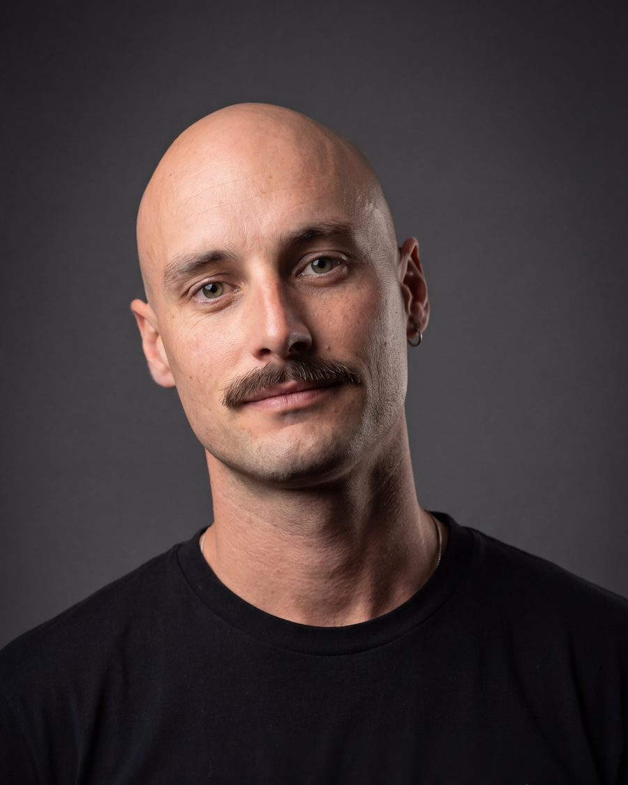
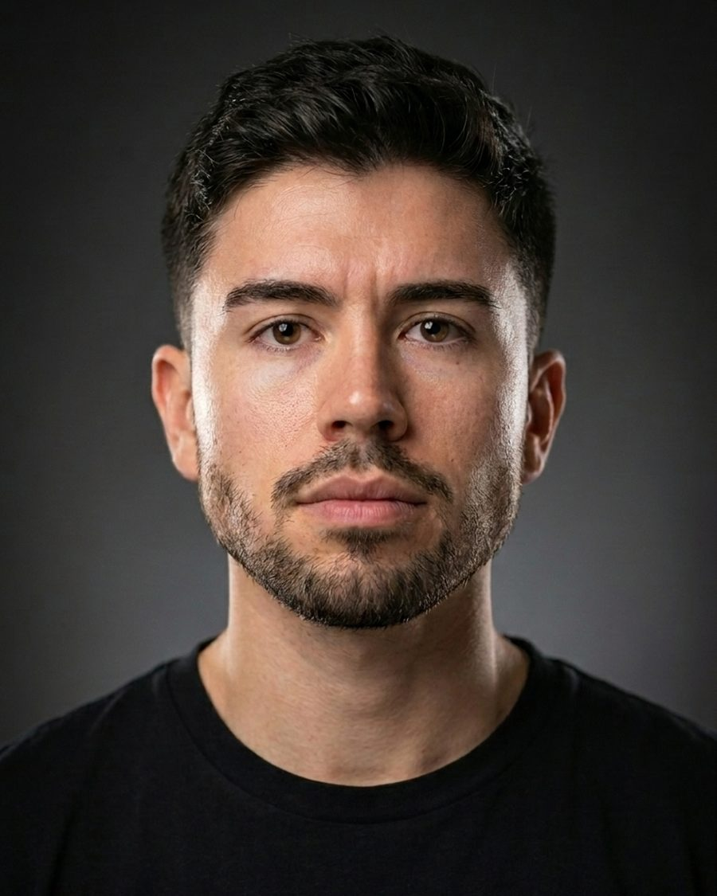
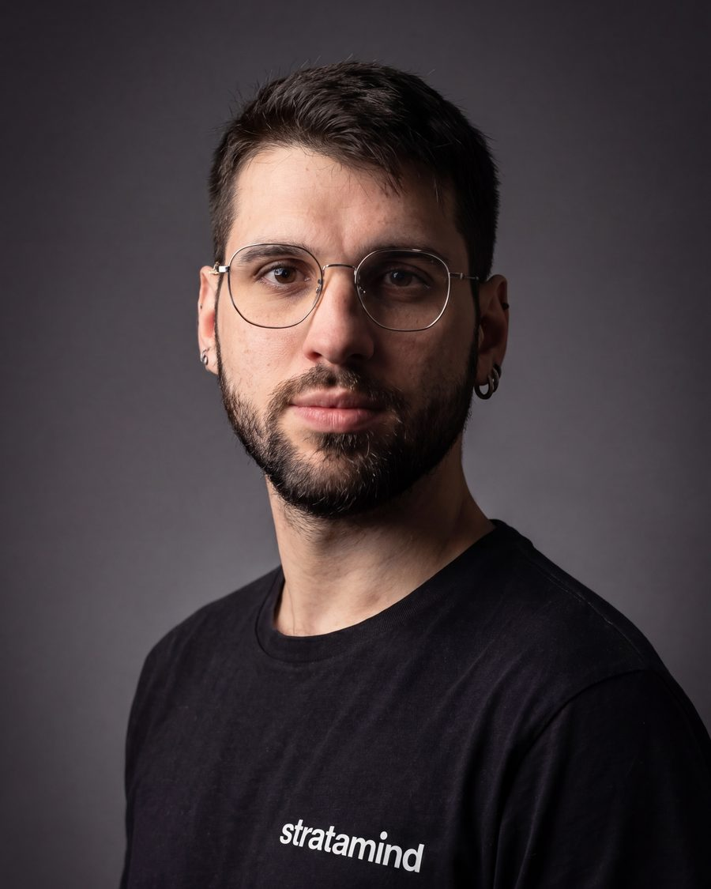

Geological & Spatial Data SoftwareSydney · Santiago
WE TURN DATAintoENGINEERINGDECISIONS.
stratamind is a SaaS studio building custom geospatial and engineering software for the mining industry — from exploration to mine closure. Block models, spatial geometry, and mine-planning workflows, built by engineers who understand the problems from the inside.
Custom-built platform for exploratory analysis of drillhole data and composites — the statistical foundation for geostatistical modelling. Spatial queries, compositing routines, and QA/QC workflows in one place.
explorationgeostatisticsmodelling
— 02
Short-term block model estimation.
Automatic estimation routines that incorporate blast-hole samples into the block model as operations advance — keeping short-term grade control aligned with the evolving resource.
open-pitgrade-controlresource-modelling
— 03
Operational analysis of phase designs.
3D spatial analysis of operational conditions bench-by-bench across open-pit phase designs. Surfaces operational risk and scheduling constraints before they reach the field.
open-pitmine-planningoperational-risk
— 04
Mine-to-plan geometric compliance.
3D spatial control of the actual extraction sequence against plan. Custom data analytics that close the loop between planned production and what the pit actually delivered.
open-pitmine-planningreconciliation
— 05
Mine-to-design compliance.
Implementation of the Full-Control methodology for bench design adherence monitoring. Geotechnical and geometric tolerances evaluated bench-by-bench, continuously.
open-pitgeotechnicalmine-design
— 06
Mine closure cost estimator.
Custom estimation framework for closure measures and their associated costs across the operation — built for the realities of how closure provisions are actually tracked and updated.
mine-closureprovisionsrehabilitation
03 / 04Principals
Three engineers and a shared rock-to-code background.

CS · 01STM/001
Carlos Schumann
Founder · Mining Engineer
Mining engineer with nine-plus years across open-pit and underground planning, mine-design compliance and JORC Mineral Reserves reporting at tier-1 operations. A Master's in Artificial Intelligence complements that engineering background — bringing digital tools, automation and applied AI to the problems mine planners actually work on. Carlos leads product direction and the engineering work beneath stratamind's platform.
MSc · AIMMinEng · UNSW (c)AAusIMMSydney
Read bio →

FJ · 02STM/002
Francisco Jofré
Principal · Mine Closure
Seven-plus years in mine closure, tailings storage (TSF) and environmental compliance for major operators across Australia, Chile, Peru and Colombia — including BHP, Rio Tinto, Anglo American and CODELCO. Francisco leads closure-to-reconciliation methodology and closure cost estimation at stratamind.
BEng · MiningMMinEng · UNSW (c)GISTM · TSFSydney
Read bio →

NW · 03STM/003
Nathan Wolff
Principal · Geology & Research
Geologist, Earth-System Sciences PhD candidate, and environmental scientist. Nathan bridges structural geology, hydrogeology, climate modelling and geostatistics — anchoring the research, numerical modelling and data pipelines that sit beneath stratamind's platforms.